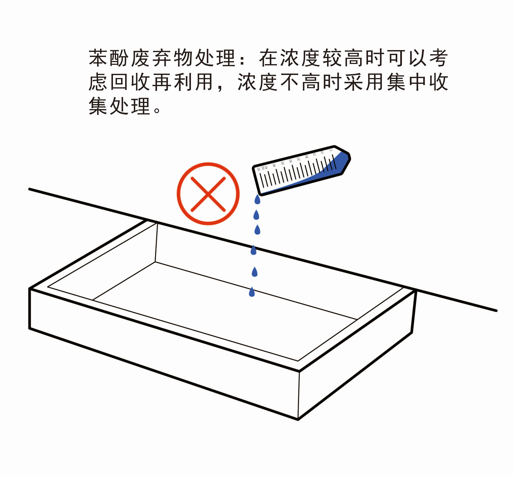
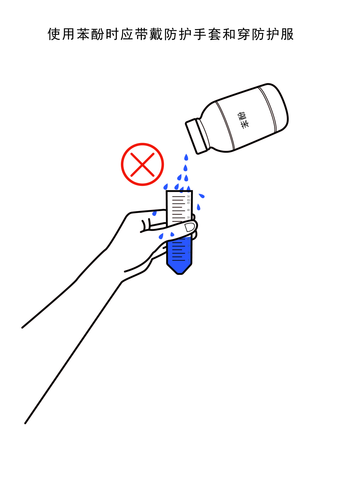
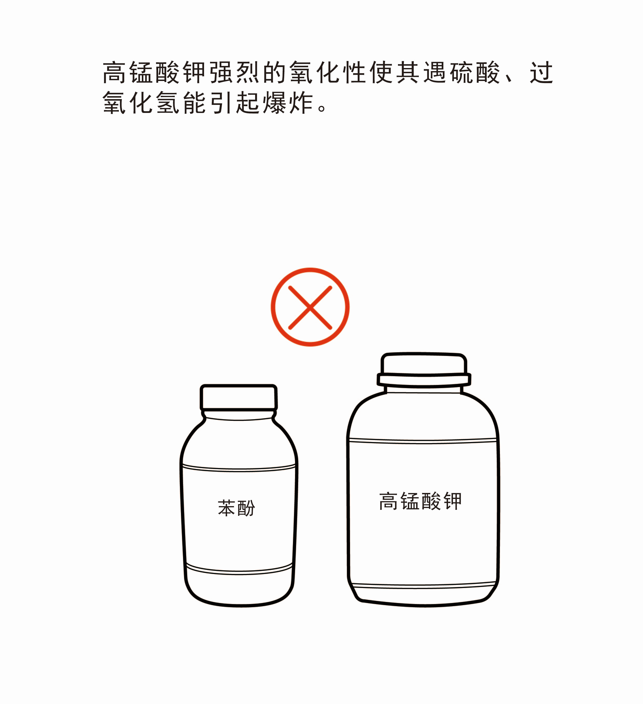

第三章 生物试剂的使用安全
生物实验室化学试剂的安全使用关系到个体的人身安全，所以熟悉化学试剂的性质，然后了解试剂的正确取用并且配制等安全操作，对于出入实验室的每个人来说至关重要。
国家质量技术监督局于1992年发布了国家标准《常见危险化学品的分类及标志》（GB13690-1992）按主要危险特性把危险化学品分为八类。现将生物实验室常见试剂按照以上分类方法将其大体分为有毒害试剂（包括剧毒试剂、有毒害试剂、强腐蚀性试剂）、易燃易爆等化学性质不稳定类试剂以及动物麻醉药品。
剧毒试剂是指具有剧烈毒性危害的化学品，包括人工合成的化学品及其混合物（含农药）和天然毒素。如叠氮化钠，大鼠试验经口LD50≤50mg/kg、经皮LD50≤200mg/kg、吸入LC50≤500ppm（气体）或2.0mg/L（蒸气）或0.5mg/L（尘、雾）即可致死。
1、购买
各单位和实验室应严格执行危险化学品申购程序，按需申购剧毒化学品、易制爆化学品，取得审批同意后方可购买，具体购买流程如下：
（1）申购人填写《危险化学品申购审批表》；
（2）申购人所在实验室的负责人和所在院（系）的安全管理员和分管领导审核、审批《危险化学品申购审批表》；
（3）对于非管制类危险化学品，取得实验室和院（系）审核、审批同意后，申购人可依照国家相关法律法规和学校相关采购规定实施采购；
（4）对于管制类危险化学品，取得实验室和院（系）审核同意后，还须将《危险化学品申购审批表》以及相关申请材料提交实验室与设备管理处（以下简称实设处）审核；实设处审核同意后，根据管制类危险化学品的种类，由实设处或申购人向行政主管部门提交购买申请。实验室凭行政主管部门开具的购买凭证实施采购。
2.安全操作
危险化学品使用人员事先应经过培训和指导，掌握安全操作方法及有关防护知识；剧毒化学品使用人员须取得上岗资格证；应在通风良好的条件下进行；实验过程中，操作人员穿戴的防护用品和采取的安全措施必须与实验内容的安全等级相匹配；
1） 储存
按照《细则》第五章的要求，剧毒化学品须储存在保险柜内，并在存放场所安装监控设施，其日常管理应做到“五双”：双人收发、双人记账、双人双锁、双人运输、双人使用；易制爆化学品必须根据各自不同的危险特性，分类分项存放在防爆柜（须上锁）内，不得混存。剧毒化学品、易制爆化学品专用储存室（柜）应在醒目的位置设置警示标识和指示牌，指示牌上必须注明负责人及联系方式以及所有存放化学品的名称、危险特性、预防措施、应急措施等相关信息。
2）废弃物处理
剧毒化学品废弃物应分类盛装在指定的容器内。且剧毒化学品包装容器不得作为生活垃圾随意丢弃。
溴化乙锭（EB）、β巯基乙醇、氯仿、Trizol、二乙基焦碳酸酯（DEPC）以及N,N,N',N'-四甲基二乙胺（TEMED）等是生物实验室最常见的有毒有害试剂。
1. 溴化乙锭（EB）
l 理化特性：溴化乙锭呈深红色，是一种高度灵敏的荧光染色剂，含有一个可以插入DNA堆积碱基之间的一个三环平面。由于溴化乙锭能和DNA结合，故具有强致癌性。用标准302nm紫外光透射仪激发并放射出橙红色信号用于观察DNA。
l 安全操作：配制时应戴口罩和多层手套，避免手直接接触。
l 购买和储存：实验室溴化乙锭的获得必须经专门的渠道，合法购买，且单独放置避免污染其他物品。
l 废弃物处理：实验结束后，应对含有EB的溶液进行净化处理然后放入指定的容器，不能随意丢弃在桌面和地面。
2. 氯仿
l 理化特性：学名三氯甲烷，分子式是CHCl3，是一种无色透明状液体，不溶于水，能溶于醇、醚、苯等。氯仿极易挥发，有特殊气味，对光敏感，遇到光照会与空气中的氧气作用，逐渐分解成有毒的光气和氯化氢。吸入对人体有害。在提取RNA时，氯仿可以有效的使有机相和无机相迅速分离，同时还可以抑制RNA酶的活性。
l 安全操作：需在通风橱内操作，操作人员应经过专门培训，严格按照操作规程，佩戴防毒面具和护目镜，穿防毒工作服和防化学品手套。
l 存储: 一般储存于阴凉、通风的库房，远离火种、热源，库存温度不能超过30℃。保持容器密闭，避免与碱类、铝混储。
l 废弃物处理：用完之后的废液应倒入指定容器中，不能随意丢弃。
3. N,N,N',N'-四甲基二乙胺（TEMED）
l 理化特性：无色透明液体，分子式为(CH3)2NCH2CH2N(CH3)2，有微腥臭味，有神经毒性，易燃并且有腐蚀性。用于配制PAGE胶等。TEMED通过催化过硫酸铵形成自由基而加速丙烯酰胺与双丙烯酰胺的聚合。
l 安全操作：在通风橱中操作，操作过程中注意穿戴实验服、一次性手套及口罩。
l 储存：用完之后应及时拧紧瓶盖，防止渗漏。一般低温保存，远离火源。
l 废弃物处理：在配制PAGE胶过程中若发现漏胶现象，应及时处理，倒入指定容器中，勿直接倒入下水道。
这类试剂主要包括强酸和强碱以及苯酚等。强酸如硫酸、盐酸、硝酸等，强碱如氢氧化钠、氢氧化钾等。这些物质对人的皮肤和呼吸道均有强烈的刺激性，严重者会烧伤皮肤甚至导致皮肤病变等严重后果。
1. 浓硫酸
l 理化特性：无色澄清油状液体，无气味，能与水及醇任意混合。相对密度1.84，沸点338℃（分解为三氧化硫及水）。有强烈腐蚀性、吸水性、脱水性和强氧化性等特殊性质。它能和水以任意比混溶，在溶解时能放出大量的热，暴露在空气中能迅速吸收水分。接触强氧化剂如氯酸盐能发生剧烈反应并能引起火灾，遇碱金属如钾、钠等能引起燃烧爆炸。
l 安全操作：在稀释时为避免酸液飞溅灼伤皮肤，必须戴上橡胶手套和护目镜操作且只能把酸沿着侧壁缓缓地倒入水中，并不断搅拌。
l 存储：浓硫酸应由专人负责，专人保管，放在干燥通风的试剂柜中，与氧化剂、易燃物、有机物及金属粉末严格分开不得混存。
l 废弃物处理：实验室含浓硫酸的废液应放入指定的存放浓硫酸的容器中，定期中和处理达标之后才能丢弃，否则会严重污染环境，危及健康。
2. 浓盐酸
l 理化特性：浓盐酸是氯化氢气体的水溶液，纯品无色透明，在空气中产生白雾，有浓烈的刺鼻气味，能与水，乙醇任意混合。呈强酸性，有较强腐蚀性，有毒，与金属及金属氧化物、碳酸盐、硝酸盐、氯酸盐、硫化钙等都能发生剧烈化学变化，与碱中和能反应产生大量热。生物实验室一般用作调节PH用。
l 安全操作：由于其有强腐蚀性和刺鼻气味，因此取用要在通风橱中，戴上护目镜、手套和口罩，避免吸入和飞溅至皮肤。
l 储存: 实验室将其储存在阴凉的危化品试剂柜中，有专人保管，领用需要登记，剩余的需及时归还至试剂柜中。
l 废弃物处理：需经中和、分解等处理确定安全后，方可倒入指定容器。
3. 氢氧化钠
l 理化特性：分子式为NaOH，白色无定形易潮解固体，又称烧碱、苛性钠，溶于水放出大量热，遇各种酸能发生中和反也能产生大量热。溶于乙醇、甘油，不溶于丙酮。相对密度2.13，熔点318.4℃，沸点1390℃，有极强腐蚀性，接触皮肤能破坏肌体组织导致坏死，易吸收空气中二氧化碳成为碳酸钠，生物实验室通常用作调节PH值用。
l 安全操作：应在通风橱中操作，戴防护头罩，穿橡胶耐酸碱服，戴橡胶耐酸碱手套。远离易燃、可燃物，避免与酸类接触。稀释或制备溶液时，应把碱加入水中，避免沸腾和飞溅。
l 储存: 由于极其易溶于水，容易潮解，故应严格密封存放在干燥通风的地方。同时远离可燃物或易燃物以及酸类。
l 废弃物处理：高浓度废液须经中和处理，确认安全后，方可倒入废液容器。
4. 苯酚
l 理化特性：化学式为C6H5OH，又名石碳酸、羟基苯，是最简单的酚类有机物，一种弱酸。纯品是白色结晶，在空气中逐渐变成微红色结晶，有特殊气味有毒有腐蚀性。本品能自空气中吸收水分而逐渐液化，水溶液呈酸性。提取DNA时低浓度苯酚能使蛋白变性,高浓度能使蛋白沉淀。
l 安全操作：在通风橱中操作，操作人员需带上自吸式防尘口罩，戴防护手套和穿防护服，操作中要轻装轻放，防止撞击、摔砸。
l 储存: 贮存于通风干燥场所，远离火种、热源，应与氧化剂隔离堆放。包装要密封，防止吸潮变质。
l 废弃物处理：在浓度较高时可以考虑回收再利用，浓度不高时采用集中收集处理。


化学性质不稳定的试剂可分为易燃易爆类和强氧化剂类。
一般将闪点在 25℃ 以下的化学试剂列入易燃试剂，它们极易挥发，遇明火即可燃烧，常见有苯类、胺类、醇类、醚类。例如四甲基乙二胺（TEMED）、甲醇、乙醚。还有一些固体试剂如金属钾、 钠、 锂、 钙、 氢化铝、电石等等
1. 甲醇
l 理化特性：甲醇是最简单的醇类，易挥发，有毒，有强烈的刺鼻气味且极易燃。相对密度0.7914(20/4℃)，熔点?97.8℃，沸点64.96℃，能与水和多数有机物混溶，蒸气与空气形成爆炸性混合物。在生物实验的Western blot 中常用到甲醇，如电转液中的甲醇带正电，有助于蛋白吸附在膜上，还有一个作用是降温。
l 安全操作：由于甲醇具有强挥发性和易燃性，故应在通风橱中使用这些试剂，戴上手套和口罩，注意远离热源和明火。
l 存储：所有挥发性有机溶剂尤其是醇 、醚等严禁贮存于冰箱，应存放在危化品试剂柜中，并在试剂瓶上标好易燃易爆的标签。不得与氧化剂共存，库房温度控制在30℃以下。
l 废弃物处理：废液需存放于指定的废液桶中，定期交给相关部门进行回收，不得直接倒入下水道。
2. 乙醇
l 理化特性：一种具有芳香气味的无色液体，易挥发，易燃烧，相对密度0.789(20/4℃)，沸点78.5℃，熔点?117.3℃，它能够溶解多种无机物和有机物，能跟水任意互溶，乙醇蒸气与空气混合形成爆炸性混合物。实验室75％乙醇常用来消毒，高浓度的乙醇用作酒精灯燃料，是实验室常见的试剂。
l 安全操作：由于乙醇易挥发，易燃的特性，使用过程中一定要注意远离火源，热源，使用酒精灯时应小心，避免喷过酒精的部位直接酒精灯。
l 存储：放在阴凉、干燥的地方，最好存放于专门的试剂柜中。
l 废弃物处理：无需特殊处理。
3. 乙醚
l 理化特性：化学式为C2H5OC2H5，无色透明液体，有芳香气味，易挥发，遇高热、明火极易爆炸微溶于水，溶于乙醇，苯等多种有机溶剂。相对密度0.7135，沸点34.5℃，闪点?45℃，自燃点180℃，难溶于水，易溶于三氯甲烷，极易挥发和着火。蒸气与空气混合形成爆炸物。实验室一般用作实验动物的全身性麻醉。
l 安全操作：由于具有神经麻醉作用且易挥发，所以避免皮肤接触，同时应戴相应的全身防护用品。操作环境周围应远离火源。
l 存储：储存于阴凉通风的防爆试剂柜中，远离火种、热源。避免阳光直射，要求包装严密，切勿与空气接触，与氧化物等分开储存。
l 废弃物处理：废弃物应存放在专门的回收容器中，集中处理，不可随意丢弃。
4. 金属钠
l 理化特性：钠属于活泼金属单质，呈银白色，质地较软，具有较好的延展性，在?20℃时开始脆硬，在100℃时开始蒸发。相对密度0.9710（20℃），熔点97.81℃；沸点892℃；自燃点>115℃（在干燥空气中）。在空气中迅速氧化，遇水剧烈反应产生氢气，易燃烧易爆炸。
l 安全操作：分解金属钠时，可把它放入乙醇中使之反应，但要注意防止产生的氢气着火。同时要做好防护措施，戴上护目镜和口罩。
l 存储：把金属钠切成小块，置于煤油中密封保存。贮存于干燥、阴凉、通风良好的库房，要隔绝热源、火种和氧化剂、酸类，防止日光直射，库温度应控制在30℃以下，相对湿度在75%以下。
强氧化性物质都是过氧化物或是含有强氧化能力的含氧酸及其盐，在适当条件下可放出氧发生爆炸，一般具有腐蚀性。无机过氧化物、氯酸盐、高氯酸盐、硝酸盐、高锰酸盐、有机过氧化物等都属于常见的强氧化物。
1. 高锰酸钾
l 理化特性：分子式KMnO4，呈深紫色细长斜方柱状，有金属光泽。相对密度2.703，熔点240℃（分解）。本品与乙醇、乙醚、硫磺、磷、硫酸、双氧水等接触会发生爆炸，与甘油混合能发生燃烧，与铵的混合有此起爆炸的危险。在实验室中常作氧化剂，强烈的氧化性使其遇硫酸、过氧化氢能引起爆炸。
l 安全操作：在使用这些化学试剂时要注意戴上手套和护目镜，操作环境要密闭，加强通风且温度不能过高（不要超过30℃）。远离火种、热源
l 存储：强氧化性试剂在某些条件下可以放出氧，有发生爆炸的危险，注意和还原性以及易燃易爆类物质分开存放在专柜中，标明强氧化性标志。

2. 过氧化氢
l 理化特性：化学式为H2O2，无色透明液体，有强腐蚀性。含量60%~100%为爆炸品，40%~60%为一级氧化剂，市售工业品含量为27.5%及35%，医药用含量为3%。氧化能力强，如与强氧化剂如高锰酸钾，则能发生猛烈氧化还原反应，与铅和铅的氧化物接触能发生剧烈反应，与丙酮、甲酸、羧酸、乙二醇能引起爆炸。
l 安全操作：操作时需要穿戴工作服，戴防腐防护手套。
l 存储：贮藏在阴凉、通风的专用库房，远离火种、热源、避免阳光直晒。库温不超过30℃。与各种强氧化剂、易燃液体、易燃物隔离。
l 废弃物处理：废液应经稀释处理之后，倒入指定的废液桶中，集中回收。
动物实验中常用到麻醉药品，有全身性麻醉药品和局部性麻醉药品，其中全身性麻醉药品又分为吸入型和注射型，吸入型如乙醚，但是由于乙醚极易挥发，在实验过程中不易控制容易对实验人员的健康构成危害，故一般不常用。注射型麻醉药有戊巴比妥钠等。
1) 购买
麻醉药品的购买要经过学院违禁药品购买途径，按照规定购买，逐笔记录。麻醉药品入库必须货到即验，至少双人开箱验收，入库验收要有记录，内容包括：日期，品名，剂型、规格、单位、数量、批号、有效期、生产单位、供货单位、质量情况、申购单、申请人、收货人、保管员。
2) 安全操作
麻醉药品的操作要经过专门培训，保证实验人员安全，培训合格者方可使用，，使用麻药要进行登记记录。
3) 存储
麻醉药品的存放要设立专库或者专柜，专库和专柜要设置防盗设施，并且实行双人双锁管理。
4) 废弃物处理
废弃的麻醉药品由实验室管理员负责计数，监管销毁，并作记录。